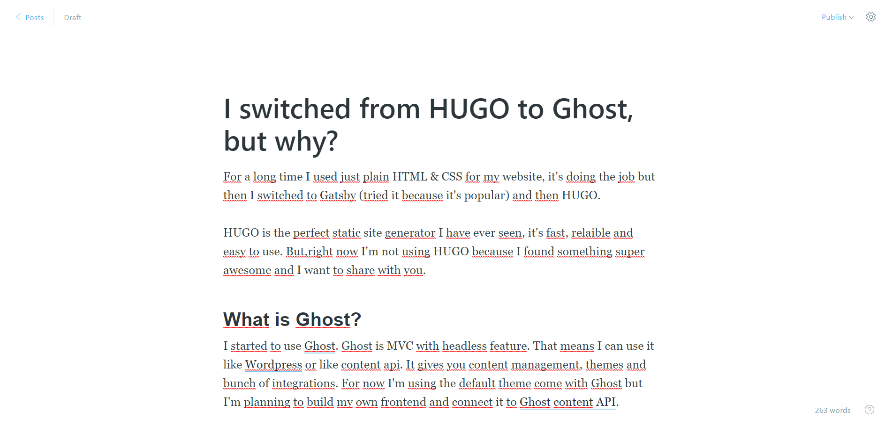
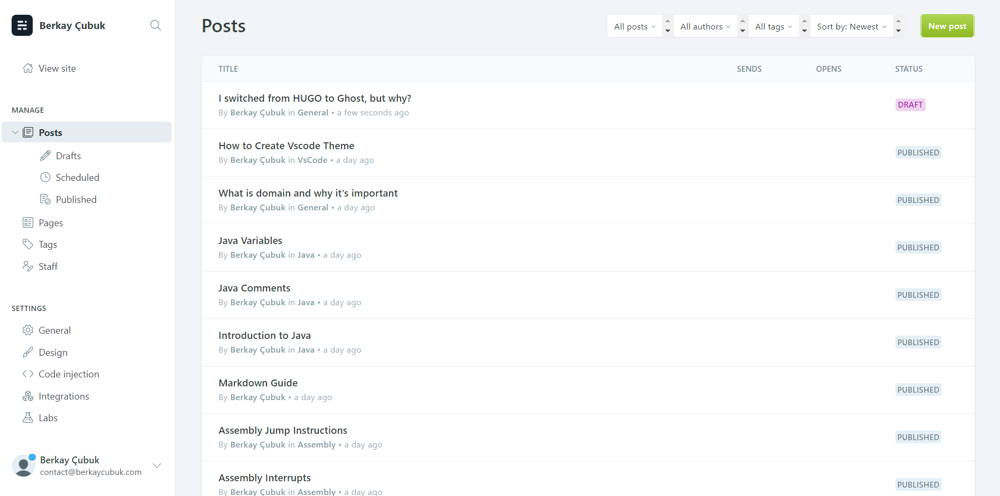
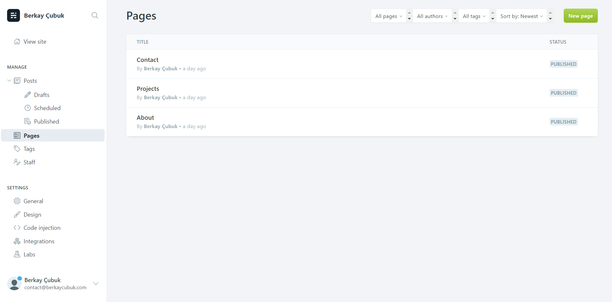
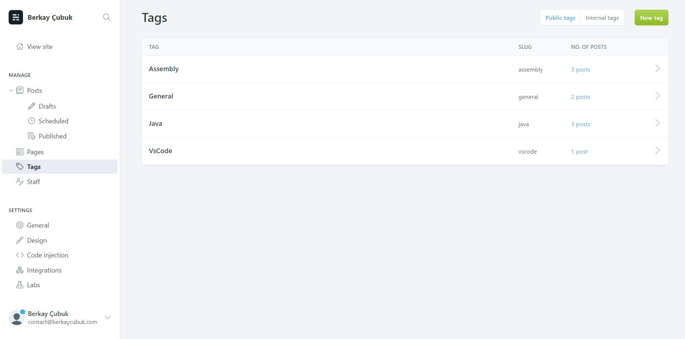
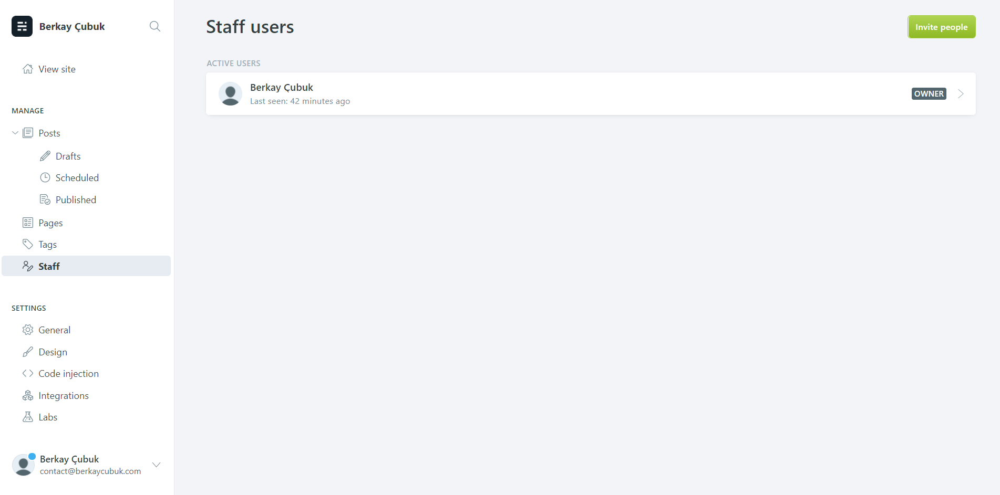
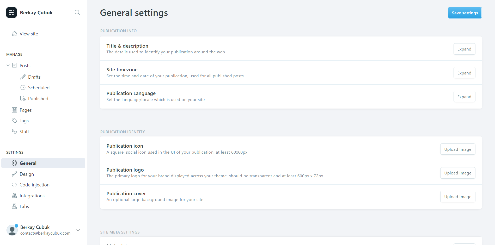
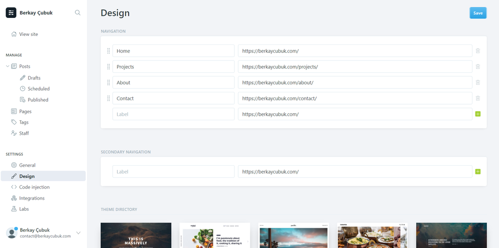

For a long time I used just plain HTML & CSS for my website, it’s doing the job but then I switched to Gatsby (tried it because it’s popular) and then HUGO.
HUGO is the perfect static site generator I have ever seen, it’s fast, relaible and easy to use. But,right now I’m not using HUGO because I found something super awesome and I want to share with you.
What is Ghost?
I started to use Ghost. Ghost is MVC with headless feature. That means I can use it like Wordpress or like content api. It gives you content management, themes and bunch of integrations. For now I’m using the default theme come with Ghost but I’m planning to build my own frontend and connect it to Ghost content API.
How to run Ghost?
Ghost is open-source, that means you can see the source code. It’s written with Node.js so, you can run it on your local machine, servers or on their paid hosting server. Before I used simple hosting to serve my HUGO website but right now I’m using droplet (cheapest one (5$/m) 🙂) from Digital Ocean(You can get free 100$ credit for 60 days). Also, Digital Ocean have Ghost installer in the marketplace and that’s super awesome for beginners or who want to taste Ghost in minutes.
If you don’t want to manage servers or updates Ghost.org have different plans to help you.
How it’s look like?
To understand Ghost, I’ll share screenshots with you.

Post Editor

Posts Page

Pages Page

Tags Page

Staff Page

Settings Page

Design Page
I hope these screenshots give you an idea about Ghost.
Conclusion
Do I like Ghost? absolutely! Do I like HUGO? Yes! But for my needs I’ve chosen Ghost, it’s giving me ability to manage my content & pages also, I can connect it’s API to my frontend with my own design. After switching from HUGO to Ghost I don’t need to store all my posts and manage it’s Github repo also it’s Github Actions.